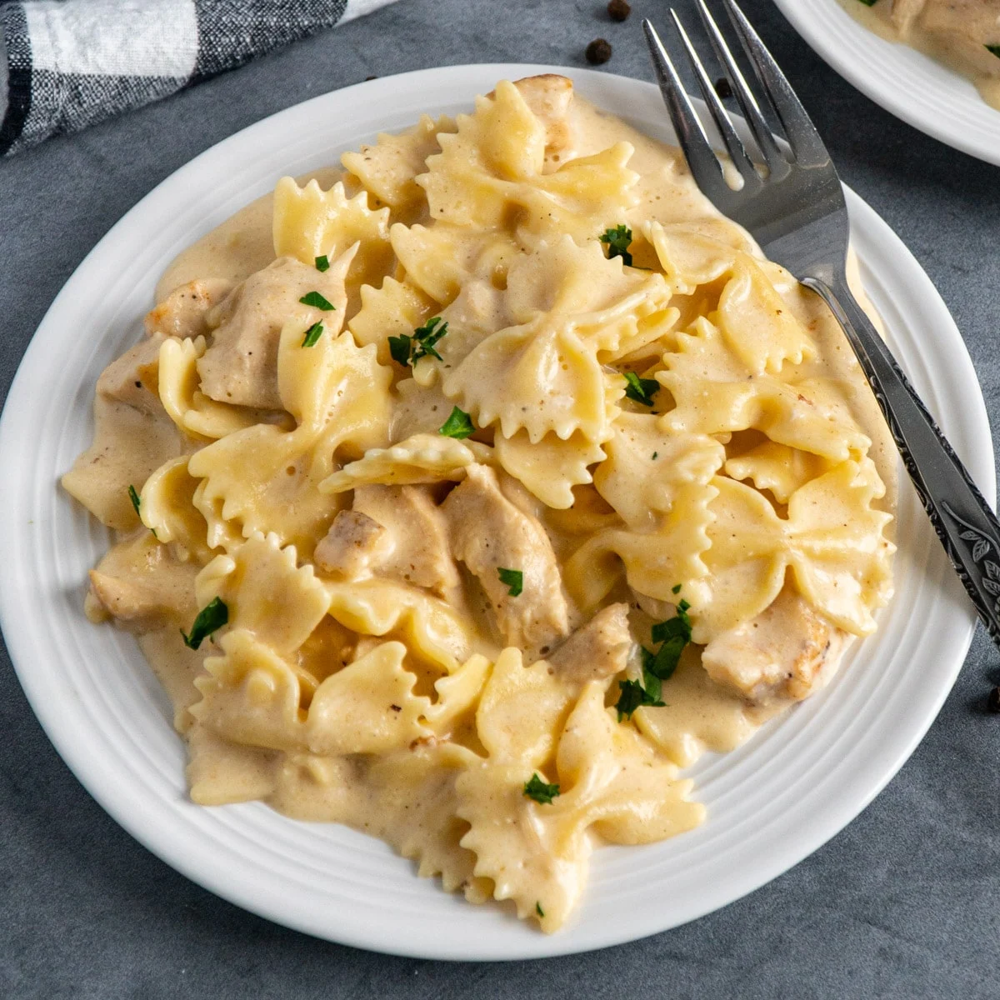

Bowtie Alfredo

Ingredients
- One and a half cups parmesan
- Quarter cup heavy cream
- 2 garlic gloves minced
- Half cup of parsley
- 2-3 Tablespoons butter
- Salt and pepper to taste
Steps
- Turn temparture to medium low
- Put butter in pan and wait for it to melt
- Dump in heayy cream and stir constantly
- Slowly add in all parmesan, only adding more when completed melted in
- Pour in parsley and stir for 1 more minute
- Add salt and pepper to taste